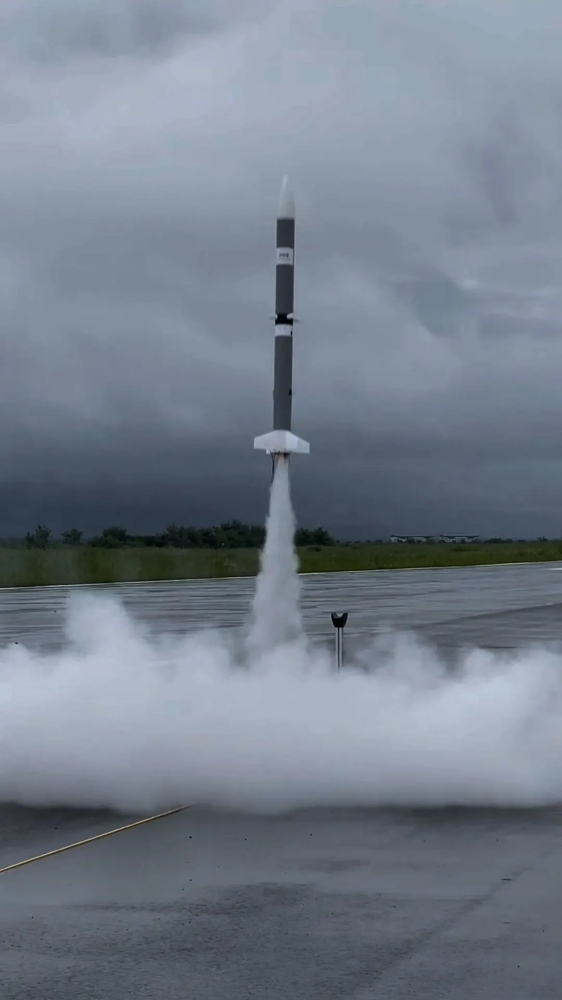
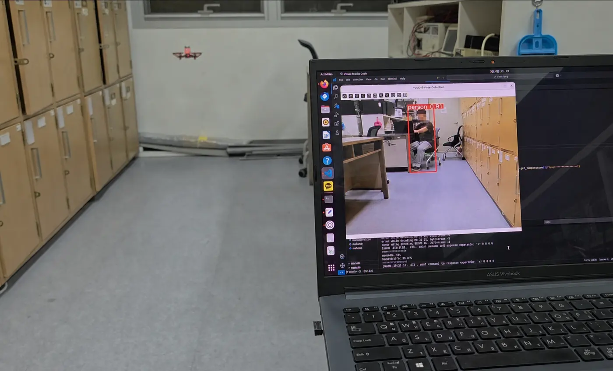
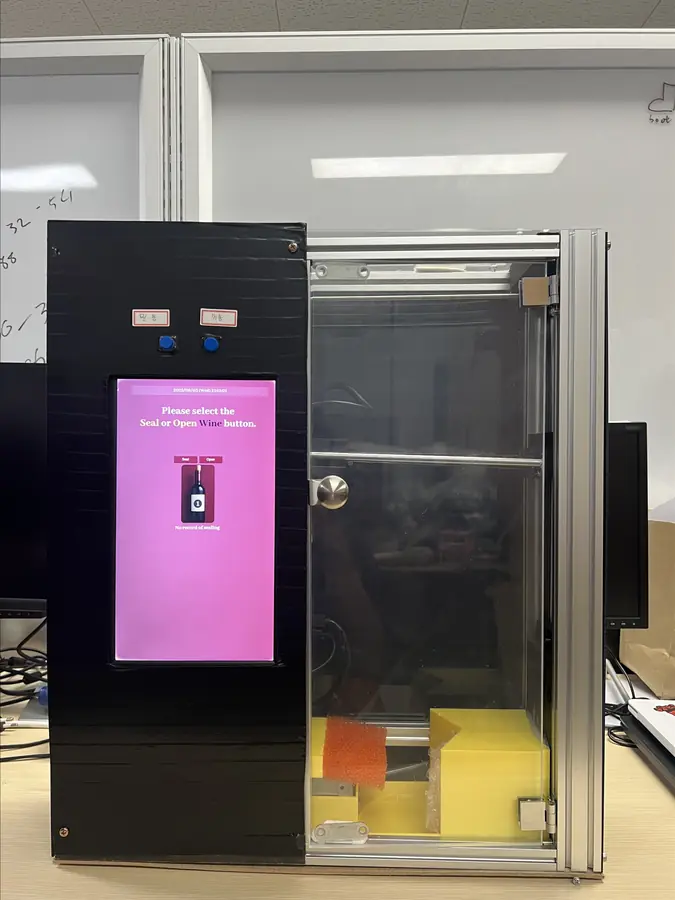

Guidance and Control
Trajectory optimization, flight dynamics, and autonomous launch and landing systems.
Embedded systems · navigation · efficient compute
I am an electrical engineering student interested in guidance, navigation, and control for aerospace systems. My work connects sensor fusion, real-time embedded avionics, hardware validation, and compute-efficient architectures.

02 / Research
I focus on the interfaces between estimation algorithms, embedded hardware, and real-world validation.
Trajectory optimization, flight dynamics, and autonomous launch and landing systems.
INS/GNSS integration, state estimation, and evaluation against reference trajectories.
Flight computers, telemetry links, ground software, and hardware-in-the-loop validation.
RTL accelerators and software optimization for resource-constrained edge systems.
03 / Projects
Each entry separates implemented work from ongoing development and documented study.
Flight systems
Built telemetry ground software and developed an STM32F405 replay platform for repeatable avionics firmware validation.
Navigation
Evaluated a loosely coupled extended Kalman filter using reference position, velocity, and attitude data.
View repositoryDigital hardware
Implemented FC1-Norm-ReLU-FC2 inference with a reusable 4x4 weight-stationary systolic array.
View repositoryEmbedded optimization
Completed and benchmarked a 64-point radix-2 DIF FFT on a Zybo Z7-20, comparing direct DFT, C FFT, and ARM implementations.
View studyComputer architecture
Implemented a 16-bit pipelined CPU with arithmetic, memory, branch instructions, and multi-stage data forwarding.
View architecture
Computer vision
Demonstrated live YOLO person detection and bounding boxes on Tello video; closed-loop following remained unfinished.
View prototype
Embedded vision
Developed YOLOv8 bottle-mouth detection and Arduino-driven control software for automated wine sealing and opening.
View project04 / Experience
Electronics Team Member, Konkuk University
Undergraduate Research Assistant, Konkuk University
B.S. Candidate, Electrical and Electronics Engineering
05 / Contact
For research and engineering conversations, reach me by email or through the profiles below.